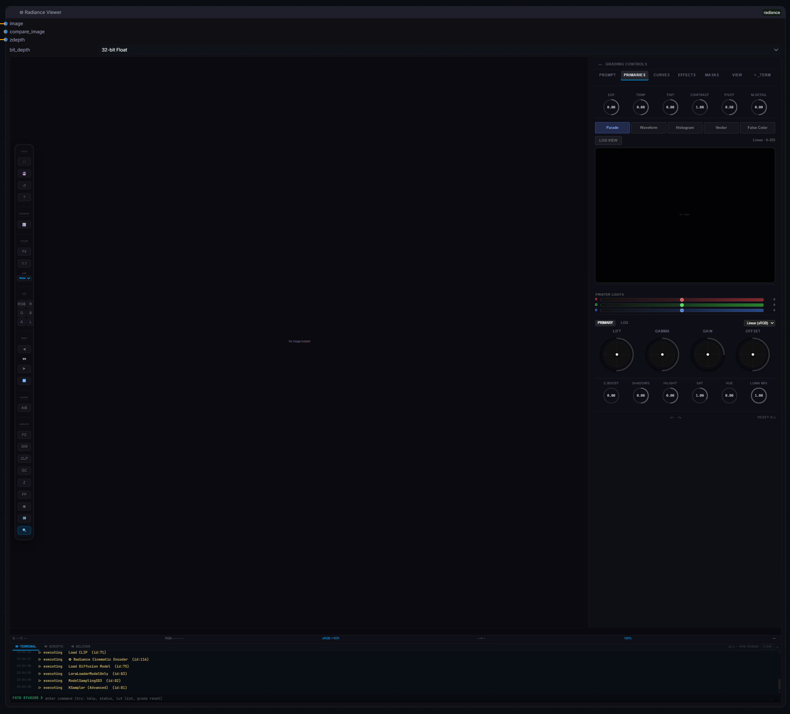

Radiance Pro Viewer
VFX Industry-Standard Image Analysis & Grading Suite for ComfyUI

◎ Radiance Pro Viewer v2.2.1 featuring the unified HUD, Scopes, and 32-bit linear pipeline.
A full 32-bit floating-point DaVinci Resolve-style grading interface built right into ComfyUI.
Primary Wheels
Lift, Gamma, Gain, and Offset trackballs for precise color balancing, plus Log Wheels (Shadow, Midtone, Highlight) for cinematic grading.
LUT Processing
Real-time 33-point 3D LUT application embedded in the viewer, eliminating the need to re-queue ComfyUI for look development.
Printer Lights
Classic film timing controls (-50 to +50 points) acting as pure exposure offsets in scene-linear space.
Secondary Controls
Contrast, Pivot, Saturation, Temperature, Tint, Shadows, Highlights, and Midtone Detail.
Replicate real-world optical characteristics in real-time.
- Presets: Instantly apply profiles modelled after `Zeiss Master Primes`, `Cooke S4/i`, `Petzval`, and `Anamorphic` lenses.
- Bokeh Shape: Customize aperture blade count (0-9), rotation, and anamorphic squeeze ratio.
- Depth of Field: Click anywhere on the image to set the focal point, and adjust aperture size in real-time.
A live Python REPL and automation environment built directly into the viewer dock.
- Live Execution: Run Python commands directly against the ComfyUI backend with real-time output.
- Persistent Namespace: Variables and imports survive between executions, allowing for complex multi-step scripting.
- Safety First: 30-second timeout guard prevents long-running scripts from freezing the UI.
- Rich Context: Pre-injected with
torch,numpy,os,json, andfolder_paths.
Optical Characteristics
Adjust Brown-Conrady barrel/pincushion distortion, chromatic aberration (fringe), aspect ratio, and anamorphic highlight streaks.
Halation & Diffusion
Introduce filmic scattered red light in high-contrast transitions (halation) and soften the overall image (diffusion) specifically focused on highlights.
Film Grain
Procedural, scale-independent film grain with size and color saturation controls.
Analyze your image with precision using GPU-accelerated scopes that run at 60fps on 4K renders.
Log/Linear Histogram (H)
Visualizes tonal distribution. Press L in the viewer terminal to toggle
log-scale Y-axis for HDR material.
Waveform Parade (W)
Shows luminance levels across the image width. Click the PARADE toggle to switch between a monochrome Luma Waveform and an RGB Parade. Crucial for matching black levels and highlight peaks.
Vectorscope (V)
Evaluates color saturation and hue distribution against standard Rec.709 color targets and the industry-standard skin-tone indicator line.
Pixel Loupe (Q)
Hover over the image to magnify pixels 8x. The loupe reads directly from the RHDR float16 buffer, providing accurate 32-bit values before tonemapping.
False Color (E) & Zebra
Calibrated exposure visualization. Blue/Purple = Shadows, Green/Yellow = Skin Tones, Red/Magenta = Clipping. Zebra stripes highlight areas exceeding a specified IRE threshold.
- Reference Shelf: Use the camera icon to save up to 8 real-time snapshots of your work into the viewer's memory.
- A/B Wipe: Activate the wipe divider between the current live view and any snapshot stored in the Reference Shelf. Drag the divider to compare color grades or image generations instantly.
Professional export pipeline with VFX data burn-ins and sidecar generation.
Render Range
Export specific frame ranges (In/Out points). Perfect for iterating on specific shots without rendering the entire sequence.
Aspect Letterboxing
Apply cinematic blanking directly on export. Presets include 2.35:1 (Scope), 1.85:1 (Flat), and 9:16 (Vertical).
VFX Burn-ins
Burn Timecode, Version strings, Frame Numbers, and the active LUT name directly into the delivery file.
Metadata Sidecars
Automatically generate ASC CDL (.cdl) files and JSON workflow metadata alongside your renders for post-production parity.
Radiance preserves full floating-point precision throughout the pipeline.
The viewer displays an 8-bit preview via tonemapping, but clicking "Save Snapshot" or using the Save EXR node exports full 32-bit linear data for Nuke or Resolve.